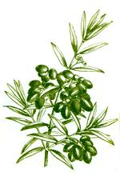
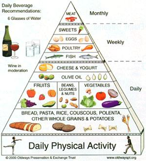
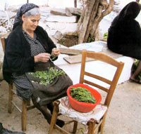

My Big Healthy Greek Diet
February/March 2004
Enjoy the experience of heart-healthy eating with these delicious mediterranean dishes.
By Elaine Gavalas
Greeks love to celebrate life with an abundance of food, dance, music and song, and will seize any occasion to host a feast. Fortunately, all this partying may be good for us. Modern research champions traditional Greek cuisine as the heart-healthiest food in the world. Landmark studies indicate the rural people of Crete and Greece have some of the world's lowest rates of diet-linked disease and obesity, and are among ethnic groups with the longest life expectancies.
I grew up in a household where my grandfather and father were Greek Orthodox priests, and it seemed as if every weekend was an occasion for a glendi (party). I was constantly attending a birthday, wedding, bridal shower, baptism or celebration for someone's name day (their Saint's feast day). Then there were our yearly celebrations, including the Greek parade, the annual glendi of our patriotis (fellow countrymen) from Arcadia and Laconia (my family's home regions in Greece), and such religious holidays as Christmas and Easter. With all our aunts, uncles, cousins, nieces, nephews, koumbados (godparents), sembetheros (relatives by marriage) and patriotis, my family barely had time to digest before the next gathering was upon us!
GREEK INGREDIENTS
As proudly explained by Gus, father of the bride in the hit movie My Big Fat Greek Wedding , Greece has given the world many gifts, from architecture to philosophy. Certainly one of Greece's most valuable contributions is its cuisine.
At the core of the traditional Greek diet are dark-green leafy vegetables (often wild-gathered), including dandelions, spinach, mustard, fennel, cumin and purslane; fresh fruits such as figs, pears, plums, grapes, melons and oranges; high-fiber whole grains, beans and lentils; complex carbohydrate-rich pastas and breads; olive oil; nuts; and such herbs and spices as garlic, oregano, bay leaves, cinnamon and cloves.
Rich in immune-boosting antioxidants, the Greek diet provides cancer-fighting compounds, healthful omega-3 fatty acids and colon-cleansing fiber, which all help lower the risks of diet linked diseases, including heart disease, obesity and diabetes. A 2003 study conducted jointly by researchers at the University of Athens in Greece and Harvard University found that people who consumed a traditional Greek diet experienced a 33 percent lower risk of death from heart disease and a 24 percent lower risk of death from cancer.
Many Greek dishes contain cheeses, such as feta made from goat's or sheep's milk. These cheeses are lower in fat and easier to digest than those from cow's milk. Greeks enjoy thick, creamy goat-milk yogurt with fresh fruit and a drizzle of honey.
Greek cuisine is noted for its lamb dishes, but lamb is traditionally only eaten on special occasions. More often, Greek meals include fish (anchovies, cod, flounder and tuna, for example) in moderate portions throughout the week. As shown in several studies, the omega-3 fatty acids in fish oils help prevent heart attacks and high blood pressure.
OLIVE OIL POWER
The ancient Greeks regarded olive oil as a gift from the gods-olive trees were valued as much as gold. Modern nutrition also places high value on olive oil, finding that it offers numerous health benefits. The traditional rural Greek diet features olive oil as the principal fat, rather than butter and margarine. Olive oil is high in monounsaturated fat, and a 1989 study revealed that it raises levels of HDL ("good") cholesterol while lowering artery-clogging LDL ("bad") cholesterol.
Numerous studies, including one published by the American Heart Association, have shown that people who eat a high monounsaturated fat diet, such as the traditional Greek diet, have a lower risk of heart disease than people who eat more saturated fats, which include butter and margarine.
Researchers also found that people who consume olive oil have a lower risk for other diseases, too. Studies conducted by Dr. Dimitrios Trichopoulos at the Harvard School of Public Health indicate a link between olive oil consumption and a lower incidence of breast cancer and osteoporosis.
And a 1999 study conducted by Dr. Athena Linos and colleagues at the University of Athens Medical School showed that the Mediterranean diet may even help protect against rheumatoid arthritis. People who consumed olive oil and lots of cooked vegetables had a 39 percent lower risk of developing this joint disease.
The Mediterranean Diet Pyramid
Greek food may taste delicious, but the secret behind the healthy Mediterranean diet lies not in consuming more Kalamata olives and fish, but in adopting the entire Greek style of eating.
For guidance, you can turn to the Mediterranean food pyramid, created by experts at the Harvard School of Public Health, and the Oldways Preservation and Exchange Trust (a nonprofit food issues think tank). These guidelines are based on the dietary habits of rural Greeks before 1960, when heart disease rates in Greece were 90 percent lower than those in the United States.
The base of the pyramid is daily exercise, followed by the traditional Greek foods we should all eat more of, notably whole (rather than processed) grains, and generous servings of fruits and vegetables, nuts and beans. Olive oil, cheese and yogurt also make the list of daily foods, but need to be eaten in exchange for-not in addition to-other, less healthy fats.
Although meat is an important part of the pyramid, it isn't eaten on a daily basis, and red meat is recommended only a few times a month and in small portions. Unlike the U.S. Department of Agriculture's Food Guide Pyramid, the Mediterranean pyramid recognizes the health benefits of red wine and suggests drinking a glass a day.
GREEK SPIRIT
According to Greek mythology, it was the god Dionysus, son of Zeus, who gave humankind the vine and taught the Greeks how to cultivate and ferment the sacred wine. The Greek saying, "The gods are only a memory, but one can taste the gods in the wine," corresponds with the ageless Greek tradition of enjoying a glass of wine at almost every meal.
Research conducted by Dr. D.K. Das and colleagues at the University of Connecticut School of Medicine suggests that red wine contains flavonoid antioxidants and resveratrol, an organic compound from grape skins that may lower the risk of blood clots and heart attacks. In 2002, researchers in France found that drinking red wine in moderation may even increase HDL cholesterol levels.
The Mediterranean food pyramid recommends drinking about a glass of wine a day to promote good health. (For some people, though, drinking wine is not advisable. For example, women who are pregnant or people who take medications that might interact with alcohol should not imbibe.)
Greek food is a wise choice, whether you're at risk for high cholesterol, suffering from high blood pressure, trying to stave off obesity or just looking for mouth-watering dishes to satisfy your appetite. Try the classic recipes on Page 104-they highlight the great-tasting and healthy ingredients of Greek cuisine that help protect against heart disease and certain types of cancer. Make these dishes individually or cook them all for a healthy, happy feast with family and friends!
Elaine Gavalas, author of Secrets of Fat-Free Greek Cooking, is a nutritionist, exercise physiologist and weight-management specialist.
Mother Earth News
 A woman from the Greek Island of Crete cleans arugula. The tender, young leaves of this wild green have a mild, peppery taste. In the spring, Greeks traditionally use such greens in salad and vegetable dishes.Elaine Gavalas, author of Secrets of Fat-Free Greek Cooking, is a nutritionist, exercise physiologist and weight-management specialist. |
 |
 |
|
 |
|
|